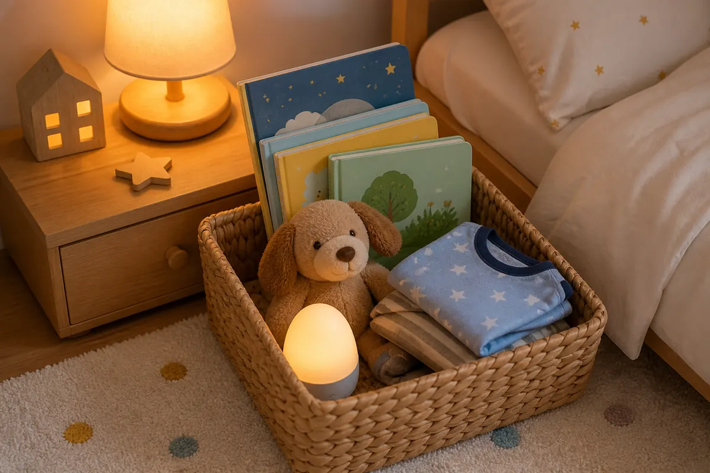

Quick answer: what makes a bedtime ritual work?
A good bedtime ritual for toddlers is predictable, short, and easy for a tired parent to repeat. It usually works best when it has one sensory cue, one connection cue, one short story, and one clear closing phrase.
- Make the room calmer: dim lights, quieter voices, fewer choices.
- Let your child participate: choose the plush, story, or final phrase.
- Read one gentle story aloud in your own voice.
- End the same way every night so the ritual has a real finish.
Bedtime can feel like the moment when every small feeling from the day returns at once. A ritual gives those feelings a container. It tells your toddler what is happening without needing a long explanation, and it gives you a calmer path to follow when everyone is already stretched.
If you need the full evening order, start with our bedtime routine for toddlers. This guide is more specific: it gives you small bedtime rituals you can place around bath, pajamas, storytime, and goodnight.
Open Baboo Stories, choose one calm read-aloud story, and keep the phone in your hands so the focus stays on your voice.
1. Start with a room cue
Toddlers respond to what they can see, hear, and feel. Before you talk about sleep, change the room: dim the lights, lower your voice, close curtains, and move noisy toys out of reach. These sensory cues say more than another reminder.
Try this: point to the moon, then whisper, "The room is getting sleepy, and so are we."
2. Choose one sleep helper
Offer one small choice that still fits your plan: "Do you want Bear or Bunny to listen to the story?" A sleep helper gives your child a job without reopening bigger choices like which room, which video, or whether bedtime is happening.
Parent shortcut: if choices make bedtime longer, rotate the helper yourself and say, "Bear is waiting for tonight's story."
3. Use a three-breath check-in
Sit shoulder-to-shoulder and take three slow breaths together: smell the flower, cool the soup, rest the shoulders. Then ask one simple question: "What color was your feeling today?"
If the answer is big: reflect first. "That was a red-feeling day. I am here." You do not have to solve the whole day before sleep.
4. Read one gentle story aloud
A bedtime story gives the ritual a warm center. Choose a short, calm story with a safe ending, then read it in a slower voice than usual. Your voice is the anchor; the story is the path.
For more help choosing the right story, use our guide to bedtime stories for toddlers. If the night is already late, try a 5-minute bedtime story.
5. Create a tiny story basket
Put two or three safe objects in a basket: a star, a soft toy, a picture card, or a toy car. Let your child pick one object before the story begins. The object can inspire the first line: "Tonight, the little car drove very quietly toward bed."
Keep it calm: offer only a few objects. Too many choices can wake up decision-making energy right when bedtime needs to narrow.
6. Add one gratitude glow
After the story, take turns naming one good thing from the day. Keep it specific and small: "I liked when we laughed at breakfast" or "I liked your drawing." This keeps connection present without turning bedtime into a long conversation.
Good limit: one for the child, one for the parent, then the ritual moves on.
7. Close with the same sleepy phrase
A repeated phrase helps the ending feel clear. Try: "My body is safe, my story is done, and my dreams can begin." Use it even on messy nights, because familiar words become a landing place.
Make it yours: choose words you can say naturally. A phrase only works if it sounds like your family.
8. Do one sleepy stretch
Guide a soft star stretch: arms reach up, hands float down, shoulders melt, knees curl in. Keep the movement slow and boring in the best possible way. This gives restless bodies one final thing to do before stillness.
For active toddlers: make the stretch the last movement, not the start of a game.
9. Protect the ending
The hardest part of a bedtime ritual is often stopping. After the final phrase, avoid adding more questions, more story choices, or one more search for the perfect song. A warm, firm ending teaches your child that the ritual can be trusted.
Say less: "I love you. Story is finished. It is sleeping time."
A simple 12-minute bedtime ritual plan
Use this when you want a practical order for tonight. Adjust the timing to your child and your evening; the goal is repeatability, not perfection.
When the ritual is not working
Your toddler asks for one more story
Choose the number before you start: "Tonight is one story night." If you want flexibility, offer one short bonus only on weekends so the normal rule stays clear.
Your child gets silly during the story
Lower your voice and slow the pace. Ask fewer questions. Some toddlers use silliness to stay connected, so respond warmly while bringing attention back to the page.
The routine takes too long
Remove steps before you add new ones. Keep the room cue, one story, and one closing phrase. Those three pieces are enough for a ritual.
Your child wants screen time
Keep the device parent-held and story-only. For a deeper reset, read our guide on toddler screen time before bed.
Make it visual: a mini bedtime chart
Children often follow pictures before they follow instructions. Draw these cues on sticky notes and let your child flip each one over when it is complete.
Bedtime ritual FAQs
What is a good bedtime ritual for toddlers?
A good toddler bedtime ritual is short, repeatable, and calm: dim the room, offer one small choice, read one gentle story, ask one simple feeling question, and end with the same goodnight phrase.
How long should a toddler bedtime ritual take?
Many families do well with 10 to 20 minutes after bath, pajamas, and teeth are finished. The exact length matters less than whether the order is predictable and realistic for you to repeat.
Can a story app be part of a calming bedtime ritual?
Yes, when it stays parent-led. Choose the story, hold the device yourself, keep brightness low, and read aloud in your own voice instead of handing over autoplay video time.
Make tonight's story easier
Baboo Stories gives you gentle read-aloud stories for the exact moment when you want connection without searching, scrolling, or inventing a plot from scratch.
For general child sleep guidance beyond storytime ideas, see NHS: sleep and young children.